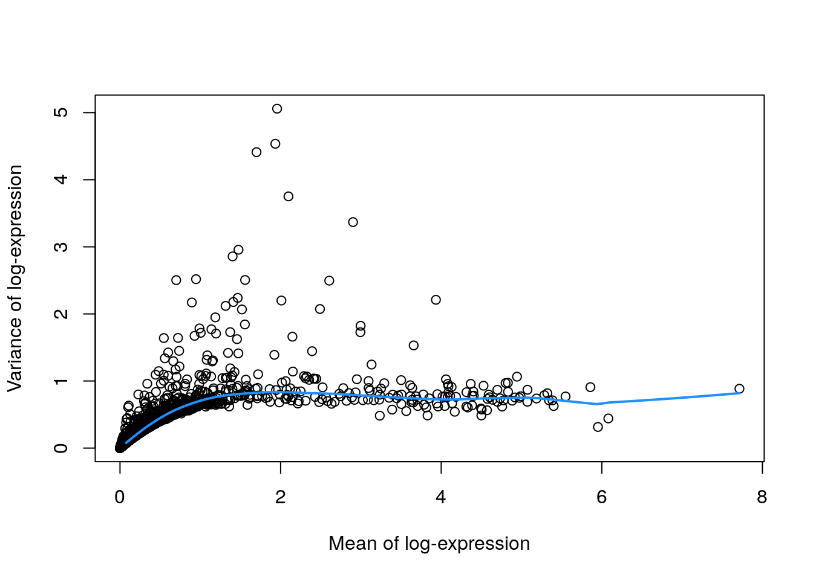

7 Selección de genes
- Instructora: Yalbi I. Balderas-Martínez
- Instructora: Laura Gómez-Romero
7.1 Diapositivas de Peter Hickey
Ver las diapositivas originales aquí
7.2 Motivación
Usualmente usamos datos scRNA-seq para caracterizar la heterogeneidad entre células
Para hacer esto, usamos métodos como el clustering y la reducción de dimensionalidad
Esto involucra resumir las diferencias por gen en una sola medida de (dis)similitud entre un par de células
¿Cuáles genes deberíamos usar para calcular esta medida de (dis)similitud?
7.3 Selección de features (genes)
La elección de los features tiene un mayor impacto en qué tan similares decidimos que son las células
- ➕ Features que contienen información útil biológica
- ➖ Features que contienen ruido aleatorio
- 👉 Efectos laterales al reducir la dimensionalidad de los datos
Deseamos seleccionar los genes altamente variables (High Variable Genes HVGs). Genes con una variación incrementada en comparación con otros genes que están siendo afectados por ruido técnico u otra variación biológica que no es de nuestro interés.
7.4 Dataset ilustrativo: PBMC4k 10X sin filtrar
7.4.1 Descargar datos
# Usemos datos de pbmc4k
library(BiocFileCache)
bfc <- BiocFileCache()
raw.path <- bfcrpath(bfc, file.path(
"http://cf.10xgenomics.com/samples",
"cell-exp/2.1.0/pbmc4k/pbmc4k_raw_gene_bc_matrices.tar.gz"
))
untar(raw.path, exdir = file.path(tempdir(), "pbmc4k"))
library(DropletUtils)
library(Matrix)
fname <- file.path(tempdir(), "pbmc4k/raw_gene_bc_matrices/GRCh38")
sce.pbmc <- read10xCounts(fname, col.names = TRUE)
sce.pbmc## class: SingleCellExperiment
## dim: 33694 737280
## metadata(1): Samples
## assays(1): counts
## rownames(33694): ENSG00000243485 ENSG00000237613 ... ENSG00000277475
## ENSG00000268674
## rowData names(2): ID Symbol
## colnames(737280): AAACCTGAGAAACCAT-1 AAACCTGAGAAACCGC-1 ...
## TTTGTCATCTTTAGTC-1 TTTGTCATCTTTCCTC-1
## colData names(2): Sample Barcode
## reducedDimNames(0):
## mainExpName: NULL
## altExpNames(0):Dataset “Células mononucleares humanas de sangre periférica” de 10X Genomics
7.4.2 Anotación
# Anotación de los genes
library(scater)
rownames(sce.pbmc) <- uniquifyFeatureNames(
rowData(sce.pbmc)$ID, rowData(sce.pbmc)$Symbol
)
library(EnsDb.Hsapiens.v86)
location <- mapIds(EnsDb.Hsapiens.v86,
keys = rowData(sce.pbmc)$ID,
column = "SEQNAME", keytype = "GENEID"
)
# Detección de _droplets_ con células
set.seed(100)
e.out <- emptyDrops(counts(sce.pbmc))
sce.pbmc <- sce.pbmc[, which(e.out$FDR <= 0.001)]7.4.3 Control de calidad
# Control de calidad
stats <- perCellQCMetrics(sce.pbmc,
subsets = list(Mito = which(location == "MT"))
)
high.mito <- isOutlier(stats$subsets_Mito_percent,
type = "higher"
)
sce.pbmc <- sce.pbmc[, !high.mito]
# Normalización de los datos
library(scran)
set.seed(1000)
clusters <- quickCluster(sce.pbmc)
sce.pbmc <- computeSumFactors(sce.pbmc, cluster = clusters)
sce.pbmc <- logNormCounts(sce.pbmc)7.5 Dataset ilustrativo: 416B
library(scRNAseq)
sce.416b <- LunSpikeInData(which = "416b")
sce.416b$block <- factor(sce.416b$block)Línea celular de células mieloides progenitoras inmortalizadas de ratón usando SmartSeq2 https://osca.bioconductor.org/lun-416b-cell-line-smart-seq2.html 15
# gene-annotation
library(AnnotationHub)
ens.mm.v97 <- AnnotationHub()[["AH73905"]]
rowData(sce.416b)$ENSEMBL <- rownames(sce.416b)
rowData(sce.416b)$SYMBOL <- mapIds(ens.mm.v97,
keys = rownames(sce.416b),
keytype = "GENEID", column = "SYMBOL"
)
rowData(sce.416b)$SEQNAME <- mapIds(ens.mm.v97,
keys = rownames(sce.416b),
keytype = "GENEID", column = "SEQNAME"
)
library(scater)
rownames(sce.416b) <- uniquifyFeatureNames(
rowData(sce.416b)$ENSEMBL,
rowData(sce.416b)$SYMBOL
)# quality-control
mito <- which(rowData(sce.416b)$SEQNAME == "MT")
stats <- perCellQCMetrics(sce.416b, subsets = list(Mt = mito))
qc <- quickPerCellQC(stats,
percent_subsets = c("subsets_Mt_percent", "altexps_ERCC_percent"),
batch = sce.416b$block
)
sce.416b <- sce.416b[, !qc$discard]
# normalization
library(scran)
sce.416b <- computeSumFactors(sce.416b)
sce.416b <- logNormCounts(sce.416b)7.5.1 Preguntas de repaso
- ¿Cómo determinamos cuáles eran los genes mitocondriales?
- ¿Cómo decidimos filtrar las células
- ¿Puedes explicar cómo normalizamos los datos?
7.6 Cuantificando la varianza por gen
7.6.1 Varianza de los log-counts
El enfoque más simple para cuantificar la variación per-feature es simplemente calcular la varianza de los log-counts
- ➕ Selección del feature basado en los log-counts (que serán usadas en los análisis más adelante)
- ⚠️ La transformación log no logra la estabilización de la varianza perfecta, así que se requiere modelar la relación de la varianza-media de los features.
7.6.2 Enfoque simple
- Calcular la varianza de los log-counts para cada gen (ignorando grupos experimentales)
- Ordenar los genes del más-al-menos variable
7.6.3 Un enfoque más sofisticado
- Calcular la varianza de los log-counts para cada gen (ignorando grupos experimentales)
- Modelar la relación entre la media y la varianza de los log-counts para estimar la variación técnica
- Estimar la varianza biológica sustrayendo la varianza técnica de la varianza total
- Ordenar los genes de la variable de mayor-a-menor biológicamente
7.6.4 Supuestos
# Varianza de las log-counts
library(scran)
dec.pbmc <- modelGeneVar(sce.pbmc)- 🤓 El supuesto es que a cualquier abundancia dada, la abundancia de los perfiles de expresión de la mayoría de los genes están dominados por el ruido aleatorio técnico
- 🤓 Por lo consiguiente, una tendencia representa un estimado del ruido técnico como una función de la abundancia
- 🤓 Podemos entonces descomponer la varianza total de cada gen en un componente técnico y uno biológico
- 🤓 Genes con una gran varianza biológica son considerados interesantes
7.6.5 Visualizando la media y varianza
# Visualicemos la relación entre la media y la varianza
fit.pbmc <- metadata(dec.pbmc)
plot(fit.pbmc$mean, fit.pbmc$var,
xlab = "Mean of log-expression",
ylab = "Variance of log-expression"
)
curve(fit.pbmc$trend(x), col = "dodgerblue", add = TRUE, lwd = 2)
7.6.6 Ordenando genes interesantes
# Ordenemos por los genes más interesantes para checar
# los datos
dec.pbmc[order(dec.pbmc$bio, decreasing = TRUE), ]## DataFrame with 33694 rows and 6 columns
## mean total tech bio p.value FDR
## <numeric> <numeric> <numeric> <numeric> <numeric> <numeric>
## LYZ 1.95605 5.05854 0.835343 4.22320 1.10538e-270 2.17417e-266
## S100A9 1.93416 4.53551 0.835439 3.70007 2.71043e-208 7.61593e-205
## S100A8 1.69961 4.41084 0.824342 3.58650 4.31581e-201 9.43197e-198
## HLA-DRA 2.09785 3.75174 0.831239 2.92050 5.93950e-132 4.86767e-129
## CD74 2.90176 3.36879 0.793188 2.57560 4.83937e-113 2.50488e-110
## ... ... ... ... ... ... ...
## TMSB4X 6.08142 0.441718 0.679215 -0.237497 0.992447 1
## PTMA 3.82978 0.486454 0.731275 -0.244821 0.990002 1
## HLA-B 4.50032 0.486130 0.739577 -0.253447 0.991376 1
## EIF1 3.23488 0.482869 0.768946 -0.286078 0.995135 1
## B2M 5.95196 0.314948 0.654228 -0.339280 0.999843 17.7 Coeficiente de variación de las cuentas
El coeficiente de variación de las cuentas al cuadrado (CV2) es una alternativa a la varianza de los log-counts
👉 Se calcula usando las cuentas en lugar de los log-counts
🤓 CV es el ratio de la desviación estándar a la media y está muy relacionada con el parámetro de dispersión de la distribución binomial negativa usada en edgeR y DESeq2
7.7.1 Coeficiente de variación
# Coeficiente de variación
dec.cv2.pbmc <- modelGeneCV2(sce.pbmc)- 🤓 Modela la relación de la media de la varianza cuando se considera la relevancia de cada gen
- 🤓 Asume que la mayoría de los genes contienen ruido aleatorio y que la tendencia captura la mayoría de la variación técnica
- 🤓 Genes con un gran CV2 que se desvían fuertemente de la tendencia es probable que representen genes afectados por la estructura biológica
- 🤓 Usa la tasa (en lugar de la diferencia) del CV2 a la tendencia
7.7.2 Visualizando el coeficiente de variación
# Visualicemos la relación con la media
fit.cv2.pbmc <- metadata(dec.cv2.pbmc)
plot(fit.cv2.pbmc$mean, fit.cv2.pbmc$cv2,
log = "xy"
)
curve(fit.cv2.pbmc$trend(x),
col = "dodgerblue",
add = TRUE, lwd = 2
)7.7.3 Genes por coeficiente de variación
# Ordenemos por los genes más interesantes para checar
# los datos
dec.cv2.pbmc[order(dec.cv2.pbmc$ratio,
decreasing = TRUE
), ]## DataFrame with 33694 rows and 6 columns
## mean total trend ratio p.value FDR
## <numeric> <numeric> <numeric> <numeric> <numeric> <numeric>
## PPBP 2.2437397 132.364 0.803689 164.696 0 0
## PRTFDC1 0.0658743 3197.564 20.266829 157.773 0 0
## HIST1H2AC 1.3731487 175.035 1.176934 148.721 0 0
## FAM81B 0.0477082 3654.419 27.902078 130.973 0 0
## PF4 1.8333127 109.451 0.935484 116.999 0 0
## ... ... ... ... ... ... ...
## AC023491.2 0 NaN Inf NaN NaN NaN
## AC233755.2 0 NaN Inf NaN NaN NaN
## AC233755.1 0 NaN Inf NaN NaN NaN
## AC213203.1 0 NaN Inf NaN NaN NaN
## FAM231B 0 NaN Inf NaN NaN NaN7.8 Varianza de los log-counts vs coeficiente de variación
Generalmente se usa la varianza de los log-counts
- Ambas son medidas efectivas para cuantificar la variación en la expresión génica
- CV2 tiende a tener otorgar rangos altos a genes altamente variables (HGVs) con bajos niveles de expresión
- Éstos son dirigidos por una sobreregulación en subpoblaciones raras
- Puede asignar un alto rango a genes que no son de nuestro interés con varianza baja absoluta
- La variación descrita por el CV2 de las cuentas es menos relevante para los procedimientos que operan en los log-counts
7.9 Cuantificando el ruido técnico
Previamente, ajustamos una línea de tendencia a todos los genes endógenos y asumimos que la mayoría de los genes no están dominados por ruido técnico
En la práctica, todos los genes expresados tienen algún nivel de variabilidad biológica diferente de cero (e.g., transcriptional bursting)
Esto sugiere que nuestros estimados de los componentes técnicos estarán inflados probablemente
👉 Es mejor que pensemos estos estimados como una variación técnica más la variación biológica que no es interesante
🤔 Pero que tal si un grupo de genes a una abundancia particular es afectado por un proceso biológico? E.g., fuerte sobre regulación de genes específicos de un tipo celular podrían conllevar a un enriquecimiento de HVGs en abundancias altas. Esto inflaría la tendencia y compromete la detección de los genes relevantes
¿Cómo podemos evitar este problema?
Podemos revisar dos enfoques:
- Cuando tenemos spike-ins
- Cuando no tenemos spike-ins
7.9.1 En la presencia de spike-ins
dec.spike.416b <- modelGeneVarWithSpikes(
sce.416b,
"ERCC"
)
# Ordering by most interesting genes for
# inspection.
dec.spike.416b[order(dec.spike.416b$bio,
decreasing = TRUE
), ]## DataFrame with 46604 rows and 6 columns
## mean total tech bio p.value FDR
## <numeric> <numeric> <numeric> <numeric> <numeric> <numeric>
## Lyz2 6.61097 13.8497 1.57131 12.2784 1.48993e-186 1.54156e-183
## Ccl9 6.67846 13.1869 1.50035 11.6866 2.21856e-185 2.19979e-182
## Top2a 5.81024 14.1787 2.54776 11.6310 3.80016e-65 1.13040e-62
## Cd200r3 4.83180 15.5613 4.22984 11.3314 9.46221e-24 6.08574e-22
## Ccnb2 5.97776 13.1393 2.30177 10.8375 3.68706e-69 1.20193e-66
## ... ... ... ... ... ... ...
## Rpl5-ps2 3.60625 0.612623 6.32853 -5.71590 0.999616 0.999726
## Gm11942 3.38768 0.798570 6.51473 -5.71616 0.999459 0.999726
## Gm12816 2.91276 0.838670 6.57364 -5.73497 0.999422 0.999726
## Gm13623 2.72844 0.708071 6.45448 -5.74641 0.999544 0.999726
## Rps12l1 3.15420 0.746615 6.59332 -5.84670 0.999522 0.999726- 👉 Ajusta la tendencia solo con los spike-ins (que deberían estar afectados solamente por variación técnica)
plot(dec.spike.416b$mean, dec.spike.416b$total,
xlab = "Mean of log-expression",
ylab = "Variance of log-expression"
)
fit.spike.416b <- metadata(dec.spike.416b)
points(fit.spike.416b$mean, fit.spike.416b$var,
col = "red", pch = 16
)
curve(fit.spike.416b$trend(x),
col = "dodgerblue",
add = TRUE, lwd = 2
)7.10 En la ausencia de spike-ins
set.seed(0010101)
dec.pois.pbmc <- modelGeneVarByPoisson(sce.pbmc)
# Ordering by most interesting genes for inspection.
dec.pois.pbmc[order(dec.pois.pbmc$bio, decreasing = TRUE), ]## DataFrame with 33694 rows and 6 columns
## mean total tech bio p.value FDR
## <numeric> <numeric> <numeric> <numeric> <numeric> <numeric>
## LYZ 1.95605 5.05854 0.631190 4.42735 0 0
## S100A9 1.93416 4.53551 0.635102 3.90040 0 0
## S100A8 1.69961 4.41084 0.671491 3.73935 0 0
## HLA-DRA 2.09785 3.75174 0.604448 3.14730 0 0
## CD74 2.90176 3.36879 0.444928 2.92386 0 0
## ... ... ... ... ... ... ...
## ATP5J 0.614027 0.454754 0.502701 -0.0479473 0.943718 1.000000
## NEDD8 0.841407 0.561295 0.609895 -0.0486003 0.907530 0.997441
## NDUFA1 0.860049 0.560222 0.616330 -0.0561074 0.935049 1.000000
## SAP18 0.763057 0.515764 0.578890 -0.0631264 0.965173 1.000000
## SUMO2 1.359514 0.619811 0.693247 -0.0734360 0.960991 1.000000- 👉 Realiza algunas asunciones estadísticas acerca del ruido
- 🤓 Las cuentas UMI típicamente muestran una variación cercana a Poisson si solo consideramos ruido técnico de la preparación de las librerías y la secuenciación
- ⚠️ modelGeneVarByPoisson() realiza simulaciones, por lo que necesitamos “ajustar la “semilla” para obtener resultados reproducibles
- 🤓 modelGeneVarByPoisson() pueden también simular una variación binomial negativa (variación de Poisson sobredispersada)
plot(dec.pois.pbmc$mean, dec.pois.pbmc$total,
pch = 16, xlab = "Mean of log-expression",
ylab = "Variance of log-expression"
)
curve(metadata(dec.pois.pbmc)$trend(x),
col = "dodgerblue", add = TRUE
)- 🤓 La línea de tendencia basada puramente en ruido técnico tiende a producir componentes “biológicos” más grandes por los genes altamente expresados, que frecuentemente incluyen los genes “house-keeping”
- 🤔 Necesitas considerar si tales genes son “interesantes” o no en tu dataset de interés
7.11 Recordemos propiedades de los datos de sce.416b
Este dataset consiste de células de una línea celular de células inmortalizadas mieloides progenitoras de ratón utilizando SmartSeq2
Una cantidad constante de spike-in ERCC RNA se agregó a cada lisado celular antes de la prepatación de la librería
Descripción aquí
Lun, A. T. L., Calero-Nieto, F. J., Haim-Vilmovsky, L., Göttgens, B. & Marioni, J. C. Assessing the reliability of spike-in normalization for analyses of single-cell RNA sequencing data. Genome Res. 27, 1795–1806 (2017)
7.12 Considerando factores experimentales
- Los datos que contienen múltiples batches muy seguido presentan efecto de bloque que pueden crear HGVs artificiales
- Se debe identificar los HGVs en cada batch y combinarlos en una única lista de HGVs
# calculando la variacion por bloque
dec.block.416b <- modelGeneVarWithSpikes(sce.416b,
"ERCC",
block = sce.416b$block
)
dec.block.416b[order(
dec.block.416b$bio,
decreasing = TRUE
), ]## DataFrame with 46604 rows and 7 columns
## mean total tech bio p.value FDR
## <numeric> <numeric> <numeric> <numeric> <numeric> <numeric>
## Lyz2 6.61235 13.8619 1.58416 12.2777 0.00000e+00 0.00000e+00
## Ccl9 6.67841 13.2599 1.44553 11.8143 0.00000e+00 0.00000e+00
## Top2a 5.81275 14.0192 2.74571 11.2734 3.89855e-137 8.43398e-135
## Cd200r3 4.83305 15.5909 4.31892 11.2719 1.17783e-54 7.00721e-53
## Ccnb2 5.97999 13.0256 2.46647 10.5591 1.20380e-151 2.98405e-149
## ... ... ... ... ... ... ...
## Gm12816 2.91299 0.842574 6.67730 -5.83472 0.999989 0.999999
## Gm5786 2.90717 0.879485 6.71686 -5.83738 0.999994 0.999999
## Rpl9-ps4 3.26421 0.807057 6.64932 -5.84226 0.999988 0.999999
## Gm13623 2.72788 0.700296 6.63875 -5.93845 0.999998 0.999999
## Rps12l1 3.15425 0.750775 6.70033 -5.94955 0.999995 0.999999
## per.block
## <DataFrame>
## Lyz2 6.35652:13.3748:2.08227:...:6.86819:14.3490:1.08605:...
## Ccl9 6.68726:13.0778:1.65923:...:6.66956:13.4420:1.23184:...
## Top2a 5.34891:17.5972:3.91642:...:6.27659:10.4411:1.57501:...
## Cd200r3 4.60115:15.7870:5.55587:...:5.06496:15.3948:3.08197:...
## Ccnb2 5.56701:15.4150:3.46931:...:6.39298:10.6362:1.46362:...
## ... ...
## Gm12816 2.86995:0.624143:7.43036:...:2.95604:1.061004:5.92424:...
## Gm5786 2.96006:0.902872:7.49911:...:2.85427:0.856098:5.93462:...
## Rpl9-ps4 3.60690:0.543276:7.36805:...:2.92151:1.070839:5.93058:...
## Gm13623 2.83129:0.852901:7.39442:...:2.62447:0.547692:5.88308:...
## Rps12l1 3.14399:0.716670:7.57246:...:3.16452:0.784881:5.82819:...Al calcular tendencias específicas por batch se tomarán en cuenta las diferencias en la relación media-varianza entre batches
Se deben obtener estimados de los componentes biológico y técnico para cada gene específicos de cada batch, los cuales se promedian entre los batches para crear una única lista de HVGs
Factor experimental.
7.13 Seleccionando genes altamante variables (high-variable genes, HVGs)
Hasta ahora hemos ordenado los genes del más al menos interesantemente variable
¿Qué tanto debemos de bajar en la lista para seleccionar nuestros HVGs?
Para responder esta pregunta debemos tomar en cuenta lo siguiente: elegir un subset más grande:
- Reduce el riesgo de desechar señal biológica
- Incrementa el ruido por la inclusión de genes irrelevantes
Es difícil determinar el balance óptimo porque el rudio en un contexto podría ser una señal útil en otro contexto
Discutiremos algunas estrategias para seleccionar HVGs
7.13.1 Seleccionando HVGs sobre la métrica de varianza
La estrategia más simple es seleccionar los top-X genes con los valores más grandes para la métrica relevante de varianza, por ejemplo, la varianza biológica más grande calculada con scran::modelGeneVar()
Pro: El usuario puede controlar directamente el número de HVGs
Contra: ¿Qué valor de X se debe usar?
# Works with modelGeneVar() output
hvg.pbmc.var <- getTopHVGs(dec.pbmc, n = 1000)
str(hvg.pbmc.var)## chr [1:1000] "LYZ" "S100A9" "S100A8" "HLA-DRA" "CD74" "CST3" "TYROBP" ...# Works with modelGeneVarWithSpikes() output
hvg.416b.var <- getTopHVGs(dec.spike.416b, n = 1000)
str(hvg.416b.var)## chr [1:1000] "Lyz2" "Ccl9" "Top2a" "Cd200r3" "Ccnb2" "Gm10736" "Hbb-bt" ...# Also works with modelGeneCV2() but note `var.field`
hvg.pbmc.cv2 <- getTopHVGs(dec.cv2.pbmc,
var.field = "ratio", n = 1000
)
str(hvg.pbmc.cv2)## chr [1:1000] "PPBP" "PRTFDC1" "HIST1H2AC" "FAM81B" "PF4" "GNG11" ...7.13.1.1 Estrategias para seleccionar X
Asume que, por ejemplo, no más del 5% de los genes están diferencialmente expresados entre las células de nuestra población:
- Establece X como el 5% de los genes
Normalmente no conocemos el número de genes diferencialmente expresados desde antes, por lo tanto, solo hemos cambiado un número arbitrario por otro número arbitrario
RECOMENDACIÓN: Si decides utilizar los top-X HGVs, elige un valor de X y procede con el resto del análisis con la intención de regresar más adelante y probar otros valores, en vez de dedicarle mucho esfuerzo a encontrar el valor óptimo
7.13.2 Seleccionando HVGs de acuerdo a su significancia estadística
Establece un límite fijo en alguna métrica de significancia estadística. Por ejemplo: algunos de los métodos reportan un p-valor para cada gene, entonces selecciona todos los genes con un p-valor ajustado menor que 0.05
Recuerda que las pruebas estadísticas siempre dependen del tamaño de la muestra
Ventajas: * Fácil de implementar * Menos predecible que la estrategia de los top-X
Desventajas: * Podría priorizar genes con significancia estadística fuerte en vez de significancia biológica fuerte
# Works with modelGeneVar() output
hvg.pbmc.var.2 <- getTopHVGs(dec.pbmc, fdr.threshold = 0.05)
str(hvg.pbmc.var.2)## chr [1:813] "LYZ" "S100A9" "S100A8" "HLA-DRA" "CD74" "CST3" "TYROBP" ...# Works with modelGeneVarWithSpikes() output
hvg.416b.var.2 <- getTopHVGs(dec.spike.416b,
fdr.threshold = 0.05
)
str(hvg.416b.var.2)## chr [1:2568] "Lyz2" "Ccl9" "Top2a" "Cd200r3" "Ccnb2" "Gm10736" "Hbb-bt" ...# Also works with modelGeneCV2() but note `var.field`
hvg.pbmc.cv2.2 <- getTopHVGs(dec.cv2.pbmc,
var.field = "ratio", fdr.threshold = 0.05
)
str(hvg.pbmc.cv2.2)## chr [1:1972] "PPBP" "PRTFDC1" "HIST1H2AC" "FAM81B" "PF4" "GNG11" ...7.13.3 Seleccionando genes por arriba de la tendencia media-varianza
Selecciona todos los genes con una varianza biológica positiva
Este es un extremo del equilibrio sesgo-varianza que minimiza el sesgo con el costo de maximizar el ruido
Si seguimos esta aproximación, estamos:
- Dándole a la estructura secundaria de la población una oportunidad de manifestarse
- Capturando más ruido, lo cual puede reducir la resolución de poblaciones bien separadas enmascarando la señal secundaria que intentamos preservar
Funciona mejor si tenemos datasets altamente heterogeneos que contienen muchos tipos celulares diferentes
# Works with modelGeneVar() output
hvg.pbmc.var.3 <- getTopHVGs(dec.pbmc, var.threshold = 0)
str(hvg.pbmc.var.3)## chr [1:12745] "LYZ" "S100A9" "S100A8" "HLA-DRA" "CD74" "CST3" "TYROBP" ...# Works with modelGeneVarWithSpikes() output
hvg.416b.var.3 <- getTopHVGs(dec.spike.416b,
var.threshold = 0
)
str(hvg.416b.var.3)## chr [1:11087] "Lyz2" "Ccl9" "Top2a" "Cd200r3" "Ccnb2" "Gm10736" "Hbb-bt" ...# Also works with modelGeneCV2() but note `var.field` and
# value of `var.threshold`
hvg.pbmc.cv2.3 <- getTopHVGs(dec.cv2.pbmc,
var.field = "ratio", var.threshold = 1
)
str(hvg.pbmc.cv2.2)## chr [1:1972] "PPBP" "PRTFDC1" "HIST1H2AC" "FAM81B" "PF4" "GNG11" ...7.13.4 EJERCICIO: Dibujando los HVGs
Para este ejercicio tendrás que repetir la gráfica que muestra la tendencia de la relación media-varianza (ejeX: media de la expresión, ejeY: varianza de la expresión) incluyendo la línea de tendencia obtenida con alguna de las funciones vistas en la primer parte de la clase (modelGeneVar, modelGeneVarWithSpikes, modelGeneCV2). En esta gráfica, deberás colorear los puntos que corresponden a los HGVs obtenidos con algunos de los enfoques revisados
RESPUESTA
plot(fit.pbmc$mean, fit.pbmc$var,
xlab = "Mean of log-expression",
ylab = "Variance of log-expression"
)
points(fit.pbmc$mean[hvg.pbmc.var], fit.pbmc$var[hvg.pbmc.var], col = "orange")
curve(fit.pbmc$trend(x), col = "dodgerblue", add = TRUE, lwd = 2)7.13.5 Seleccionando genes de interés a priori
Una estrategia contundente es usar sets predefinidos de genes de interés. No hay vergüenza en aprovechar el conocimiento biológivo previo
Sin embargo, limita nuestra capacidad de descubrir aspectos nuevos o inesperados de la variación. Por lo tanto, considera esta como una estrategia complementaria a otros tipo de estrategias de selección de HGVs
También podrías eliminar listas pre-definidas de genes:
- Genes de proteínas ribosomales o genes mitocondriales son conocidos por encontrarse dentro de los genes más variables y por interferir con análisis posteriores
Sin embargo, tampoco hay que pecar de prevacido, espera a que estos genes demuestren ser problemáticos para removerlos
7.14 Poniendo todo junto
# Elegimos el 10% de los genes con con componente biologico de variacion mayor
dec.pbmc <- modelGeneVar(sce.pbmc)
chosen <- getTopHVGs(dec.pbmc, prop = 0.1)
str(chosen)## chr [1:1274] "LYZ" "S100A9" "S100A8" "HLA-DRA" "CD74" "CST3" "TYROBP" ...Después de esto tenemos varias opciones para imponer nuestra selección de HGVs durante el resto del análisis:
- Hacer un subset de SCE para quedarnos únicamente con los HGVs
- Especificar los HGVs en funciones posteriores
- Magia (altExps)
7.14.1 Quedándonos sólo con los HGVs
sce.pbmc.hvg <- sce.pbmc[chosen, ]
sce.pbmc.hvg## class: SingleCellExperiment
## dim: 1274 3985
## metadata(1): Samples
## assays(2): counts logcounts
## rownames(1274): LYZ S100A9 ... TNNT1 TMEM55A
## rowData names(2): ID Symbol
## colnames(3985): AAACCTGAGAAGGCCT-1 AAACCTGAGACAGACC-1 ...
## TTTGTCAGTTAAGACA-1 TTTGTCATCCCAAGAT-1
## colData names(3): Sample Barcode sizeFactor
## reducedDimNames(0):
## mainExpName: NULL
## altExpNames(0):PRO: Te aseguras de que los métodos posteriores sólo usen estos genes para sus cálculos
CONTRA: Los genes no-HGVs son eliminados del nuevo objeto SingleCellExperiment, lo cual hace menos conveniente la interrogación del dataset completo sobre genes que no son HGVs
7.14.2 Especificando los HGVs
# Example of specifying HVGs in a downstream function
# Performing PCA only on the chosen HVGs.
library(scater)
sce.pbmc <- runPCA(sce.pbmc, subset_row = chosen)
sce.pbmc## class: SingleCellExperiment
## dim: 33694 3985
## metadata(1): Samples
## assays(2): counts logcounts
## rownames(33694): RP11-34P13.3 FAM138A ... AC213203.1 FAM231B
## rowData names(2): ID Symbol
## colnames(3985): AAACCTGAGAAGGCCT-1 AAACCTGAGACAGACC-1 ...
## TTTGTCAGTTAAGACA-1 TTTGTCATCCCAAGAT-1
## colData names(3): Sample Barcode sizeFactor
## reducedDimNames(1): PCA
## mainExpName: NULL
## altExpNames(0):Mantiene el objeto SingleCellExperiment original y especifica los genes para usar en funciones posteriores mediante un argumento adicional como subset_row
PRO: Es útil si el análisis usa varios conjuntos de HGVs en diferentes pasos
CONTRA: Podría ser inconveniente especificar repetidamente el mismo conjunto de HGVs en diferentes pasos
7.14.3 Witchcraft (Brujería)
# Add the full SCE to the subsetted data SCE
altExp(sce.pbmc.hvg, "original") <- sce.pbmc
sce.pbmc.hvg## class: SingleCellExperiment
## dim: 1274 3985
## metadata(1): Samples
## assays(2): counts logcounts
## rownames(1274): LYZ S100A9 ... TNNT1 TMEM55A
## rowData names(2): ID Symbol
## colnames(3985): AAACCTGAGAAGGCCT-1 AAACCTGAGACAGACC-1 ...
## TTTGTCAGTTAAGACA-1 TTTGTCATCCCAAGAT-1
## colData names(3): Sample Barcode sizeFactor
## reducedDimNames(0):
## mainExpName: NULL
## altExpNames(1): originalaltExp(sce.pbmc.hvg, "original")## class: SingleCellExperiment
## dim: 33694 3985
## metadata(1): Samples
## assays(2): counts logcounts
## rownames(33694): RP11-34P13.3 FAM138A ... AC213203.1 FAM231B
## rowData names(2): ID Symbol
## colnames(3985): AAACCTGAGAAGGCCT-1 AAACCTGAGACAGACC-1 ...
## TTTGTCAGTTAAGACA-1 TTTGTCATCCCAAGAT-1
## colData names(3): Sample Barcode sizeFactor
## reducedDimNames(1): PCA
## mainExpName: NULL
## altExpNames(0):Utilizando el sistema de “experimento alternartivo” en la clase SingleCellExperiment
PRO: Evita algunos problemas a largo plazo cuando el dataset original no está sincronizado con el conjunto filtrado por HVGs
CONTRA: Ralentiza todos los análisis subsecuentes
7.15 Resumen y recomendaciones
- Es fácil atorarse en este paso debido a la variedad de opciones disponibles
- Elige un conjunto de HVGs y continúa con el análisis, recuerda regresar para probar la robustez de tus resultados usando una forma diferente para seleccionar los HVGs
- Si tienes spike-ins, trata de usarlos. No obstante, recuerda que los spike-ins no pueden capturar todas las fuentes de variación técnica
7.16 Recomendaciones para empezar
Para CEL-Seq2:
scran::modelGeneVarWithSpikes()
Para 10X:
scran::modelGeneVarByPoisson()
Si quieres irte por el lado de conservar demasiados genes:
scran::getTopHVGs(dec, var.threshold=0)
Y realiza una comparación rápida con, por lo menos, el top-1000 HVGs
Regresa al paso de selección de HVG para eliminar genes problemáticos tantas veces como sea necesario
7.17 Detalles de la sesión de R
## Información de la sesión de R
Sys.time()## [1] "2021-08-13 19:07:05 UTC"proc.time()## user system elapsed
## 164.936 4.620 173.053options(width = 120)
sessioninfo::session_info()## ─ Session info ───────────────────────────────────────────────────────────────────────────────────────────────────────
## setting value
## version R version 4.1.0 (2021-05-18)
## os Ubuntu 20.04.2 LTS
## system x86_64, linux-gnu
## ui X11
## language (EN)
## collate en_US.UTF-8
## ctype en_US.UTF-8
## tz UTC
## date 2021-08-13
##
## ─ Packages ───────────────────────────────────────────────────────────────────────────────────────────────────────────
## package * version date lib source
## AnnotationDbi * 1.54.1 2021-06-08 [1] Bioconductor
## AnnotationFilter * 1.16.0 2021-05-19 [1] Bioconductor
## AnnotationHub * 3.0.1 2021-06-20 [1] Bioconductor
## assertthat 0.2.1 2019-03-21 [1] RSPM (R 4.1.0)
## beachmat 2.8.0 2021-05-19 [1] Bioconductor
## beeswarm 0.4.0 2021-06-01 [1] RSPM (R 4.1.0)
## Biobase * 2.52.0 2021-05-19 [1] Bioconductor
## BiocFileCache * 2.0.0 2021-05-19 [1] Bioconductor
## BiocGenerics * 0.38.0 2021-05-19 [1] Bioconductor
## BiocIO 1.2.0 2021-05-19 [1] Bioconductor
## BiocManager 1.30.16 2021-06-15 [1] RSPM (R 4.1.0)
## BiocNeighbors 1.10.0 2021-05-19 [1] Bioconductor
## BiocParallel 1.26.1 2021-07-04 [1] Bioconductor
## BiocSingular 1.8.1 2021-06-08 [1] Bioconductor
## BiocVersion 3.13.1 2021-03-19 [2] Bioconductor
## biomaRt 2.48.2 2021-07-01 [1] Bioconductor
## Biostrings 2.60.2 2021-08-05 [1] Bioconductor
## bit 4.0.4 2020-08-04 [1] RSPM (R 4.1.0)
## bit64 4.0.5 2020-08-30 [1] RSPM (R 4.1.0)
## bitops 1.0-7 2021-04-24 [1] RSPM (R 4.1.0)
## blob 1.2.2 2021-07-23 [1] RSPM (R 4.1.0)
## bluster 1.2.1 2021-05-27 [1] Bioconductor
## bookdown 0.22 2021-04-22 [1] RSPM (R 4.1.0)
## bslib 0.2.5.1 2021-05-18 [1] RSPM (R 4.1.0)
## cachem 1.0.5 2021-05-15 [2] RSPM (R 4.1.0)
## cli 3.0.1 2021-07-17 [2] RSPM (R 4.1.0)
## cluster 2.1.2 2021-04-17 [3] CRAN (R 4.1.0)
## colorspace 2.0-2 2021-06-24 [1] RSPM (R 4.1.0)
## crayon 1.4.1 2021-02-08 [2] RSPM (R 4.1.0)
## curl 4.3.2 2021-06-23 [2] RSPM (R 4.1.0)
## DBI 1.1.1 2021-01-15 [1] RSPM (R 4.1.0)
## dbplyr * 2.1.1 2021-04-06 [1] RSPM (R 4.1.0)
## DelayedArray 0.18.0 2021-05-19 [1] Bioconductor
## DelayedMatrixStats 1.14.2 2021-08-08 [1] Bioconductor
## digest 0.6.27 2020-10-24 [2] RSPM (R 4.1.0)
## dplyr 1.0.7 2021-06-18 [1] RSPM (R 4.1.0)
## dqrng 0.3.0 2021-05-01 [1] RSPM (R 4.1.0)
## DropletUtils * 1.12.2 2021-07-22 [1] Bioconductor
## edgeR 3.34.0 2021-05-19 [1] Bioconductor
## ellipsis 0.3.2 2021-04-29 [2] RSPM (R 4.1.0)
## EnsDb.Hsapiens.v86 * 2.99.0 2021-07-29 [1] Bioconductor
## ensembldb * 2.16.4 2021-08-05 [1] Bioconductor
## evaluate 0.14 2019-05-28 [2] RSPM (R 4.1.0)
## ExperimentHub 2.0.0 2021-05-19 [1] Bioconductor
## fansi 0.5.0 2021-05-25 [2] RSPM (R 4.1.0)
## fastmap 1.1.0 2021-01-25 [2] RSPM (R 4.1.0)
## filelock 1.0.2 2018-10-05 [1] RSPM (R 4.1.0)
## generics 0.1.0 2020-10-31 [1] RSPM (R 4.1.0)
## GenomeInfoDb * 1.28.1 2021-07-01 [1] Bioconductor
## GenomeInfoDbData 1.2.6 2021-07-29 [1] Bioconductor
## GenomicAlignments 1.28.0 2021-05-19 [1] Bioconductor
## GenomicFeatures * 1.44.0 2021-05-19 [1] Bioconductor
## GenomicRanges * 1.44.0 2021-05-19 [1] Bioconductor
## ggbeeswarm 0.6.0 2017-08-07 [1] RSPM (R 4.1.0)
## ggplot2 * 3.3.5 2021-06-25 [1] RSPM (R 4.1.0)
## glue 1.4.2 2020-08-27 [2] RSPM (R 4.1.0)
## gridExtra 2.3 2017-09-09 [1] RSPM (R 4.1.0)
## gtable 0.3.0 2019-03-25 [1] RSPM (R 4.1.0)
## HDF5Array 1.20.0 2021-05-19 [1] Bioconductor
## highr 0.9 2021-04-16 [2] RSPM (R 4.1.0)
## hms 1.1.0 2021-05-17 [1] RSPM (R 4.1.0)
## htmltools 0.5.1.1 2021-01-22 [1] RSPM (R 4.1.0)
## httpuv 1.6.1 2021-05-07 [1] RSPM (R 4.1.0)
## httr 1.4.2 2020-07-20 [2] RSPM (R 4.1.0)
## igraph 1.2.6 2020-10-06 [1] RSPM (R 4.1.0)
## interactiveDisplayBase 1.30.0 2021-05-19 [1] Bioconductor
## IRanges * 2.26.0 2021-05-19 [1] Bioconductor
## irlba 2.3.3 2019-02-05 [1] RSPM (R 4.1.0)
## jquerylib 0.1.4 2021-04-26 [1] RSPM (R 4.1.0)
## jsonlite 1.7.2 2020-12-09 [2] RSPM (R 4.1.0)
## KEGGREST 1.32.0 2021-05-19 [1] Bioconductor
## knitr 1.33 2021-04-24 [2] RSPM (R 4.1.0)
## later 1.2.0 2021-04-23 [1] RSPM (R 4.1.0)
## lattice 0.20-44 2021-05-02 [3] CRAN (R 4.1.0)
## lazyeval 0.2.2 2019-03-15 [1] RSPM (R 4.1.0)
## lifecycle 1.0.0 2021-02-15 [2] RSPM (R 4.1.0)
## limma 3.48.3 2021-08-10 [1] Bioconductor
## locfit 1.5-9.4 2020-03-25 [1] RSPM (R 4.1.0)
## magrittr 2.0.1 2020-11-17 [2] RSPM (R 4.1.0)
## Matrix * 1.3-4 2021-06-01 [3] RSPM (R 4.1.0)
## MatrixGenerics * 1.4.2 2021-08-08 [1] Bioconductor
## matrixStats * 0.60.0 2021-07-26 [1] RSPM (R 4.1.0)
## memoise 2.0.0 2021-01-26 [2] RSPM (R 4.1.0)
## metapod 1.0.0 2021-05-19 [1] Bioconductor
## mime 0.11 2021-06-23 [2] RSPM (R 4.1.0)
## munsell 0.5.0 2018-06-12 [1] RSPM (R 4.1.0)
## pillar 1.6.2 2021-07-29 [2] RSPM (R 4.1.0)
## pkgconfig 2.0.3 2019-09-22 [2] RSPM (R 4.1.0)
## png 0.1-7 2013-12-03 [1] RSPM (R 4.1.0)
## prettyunits 1.1.1 2020-01-24 [2] RSPM (R 4.1.0)
## progress 1.2.2 2019-05-16 [1] RSPM (R 4.1.0)
## promises 1.2.0.1 2021-02-11 [1] RSPM (R 4.1.0)
## ProtGenerics 1.24.0 2021-05-19 [1] Bioconductor
## purrr 0.3.4 2020-04-17 [2] RSPM (R 4.1.0)
## R.methodsS3 1.8.1 2020-08-26 [1] RSPM (R 4.1.0)
## R.oo 1.24.0 2020-08-26 [1] RSPM (R 4.1.0)
## R.utils 2.10.1 2020-08-26 [1] RSPM (R 4.1.0)
## R6 2.5.0 2020-10-28 [2] RSPM (R 4.1.0)
## rappdirs 0.3.3 2021-01-31 [2] RSPM (R 4.1.0)
## Rcpp 1.0.7 2021-07-07 [2] RSPM (R 4.1.0)
## RCurl 1.98-1.3 2021-03-16 [1] RSPM (R 4.1.0)
## restfulr 0.0.13 2017-08-06 [1] RSPM (R 4.1.0)
## rhdf5 2.36.0 2021-05-19 [1] Bioconductor
## rhdf5filters 1.4.0 2021-05-19 [1] Bioconductor
## Rhdf5lib 1.14.2 2021-07-06 [1] Bioconductor
## rjson 0.2.20 2018-06-08 [1] RSPM (R 4.1.0)
## rlang 0.4.11 2021-04-30 [2] RSPM (R 4.1.0)
## rmarkdown 2.10 2021-08-06 [1] RSPM (R 4.1.0)
## Rsamtools 2.8.0 2021-05-19 [1] Bioconductor
## RSQLite 2.2.7 2021-04-22 [1] RSPM (R 4.1.0)
## rsvd 1.0.5 2021-04-16 [1] RSPM (R 4.1.0)
## rtracklayer 1.52.0 2021-05-19 [1] Bioconductor
## S4Vectors * 0.30.0 2021-05-19 [1] Bioconductor
## sass 0.4.0 2021-05-12 [1] RSPM (R 4.1.0)
## ScaledMatrix 1.0.0 2021-05-19 [1] Bioconductor
## scales 1.1.1 2020-05-11 [1] RSPM (R 4.1.0)
## scater * 1.20.1 2021-06-15 [1] Bioconductor
## scran * 1.20.1 2021-05-24 [1] Bioconductor
## scRNAseq * 2.6.1 2021-05-25 [1] Bioconductor
## scuttle * 1.2.1 2021-08-05 [1] Bioconductor
## sessioninfo 1.1.1 2018-11-05 [2] RSPM (R 4.1.0)
## shiny 1.6.0 2021-01-25 [1] RSPM (R 4.1.0)
## SingleCellExperiment * 1.14.1 2021-05-21 [1] Bioconductor
## sparseMatrixStats 1.4.2 2021-08-08 [1] Bioconductor
## statmod 1.4.36 2021-05-10 [1] RSPM (R 4.1.0)
## stringi 1.7.3 2021-07-16 [2] RSPM (R 4.1.0)
## stringr 1.4.0 2019-02-10 [2] RSPM (R 4.1.0)
## SummarizedExperiment * 1.22.0 2021-05-19 [1] Bioconductor
## tibble 3.1.3 2021-07-23 [2] RSPM (R 4.1.0)
## tidyselect 1.1.1 2021-04-30 [1] RSPM (R 4.1.0)
## utf8 1.2.2 2021-07-24 [2] RSPM (R 4.1.0)
## vctrs 0.3.8 2021-04-29 [2] RSPM (R 4.1.0)
## vipor 0.4.5 2017-03-22 [1] RSPM (R 4.1.0)
## viridis 0.6.1 2021-05-11 [1] RSPM (R 4.1.0)
## viridisLite 0.4.0 2021-04-13 [1] RSPM (R 4.1.0)
## withr 2.4.2 2021-04-18 [2] RSPM (R 4.1.0)
## xfun 0.25 2021-08-06 [2] RSPM (R 4.1.0)
## XML 3.99-0.6 2021-03-16 [1] RSPM (R 4.1.0)
## xml2 1.3.2 2020-04-23 [2] RSPM (R 4.1.0)
## xtable 1.8-4 2019-04-21 [1] RSPM (R 4.1.0)
## XVector 0.32.0 2021-05-19 [1] Bioconductor
## yaml 2.2.1 2020-02-01 [2] RSPM (R 4.1.0)
## zlibbioc 1.38.0 2021-05-19 [1] Bioconductor
##
## [1] /__w/_temp/Library
## [2] /usr/local/lib/R/site-library
## [3] /usr/local/lib/R/libraryPatrocinadores
Agradecemos a nuestros patrocinadores:


Zheng, G. X. Y. et al. Massively parallel digital transcriptional profiling of single cells. Nat. Commun. 8, 14049 (2017).↩︎
Usando Ensembl v86 para humano↩︎
Usamos los resultados de
emptyDrops()con un límite de 0.1% FDR y el filtro de 3 desviaciones sobre la mediana (MAD) en la expresión mitocondrial.↩︎Encontramos unos clusters rápidos para las célulasy usamos esa información para calcular los factores de tamaño.↩︎
Lun, A. T. L., Calero-Nieto, F. J., Haim-Vilmovsky, L., Göttgens, B. & Marioni, J. C. Assessing the reliability of spike-in normalization for analyses of single-cell RNA sequencing data. Genome Res. 27, 1795–1806 (2017)).↩︎
Es un
DFrame↩︎No, contiene más información dentro de
metadata(dec.pbmc)↩︎class(metadata(dec.pbmc))ysapply(metadata(dec.pbmc), class)↩︎Una función↩︎
Checa
?fitTrendVary si quieres también checa el código fuente (para mí es muy útil este paso) https://github.com/MarioniLab/scran/blob/master/R/fitTrendVar.R↩︎